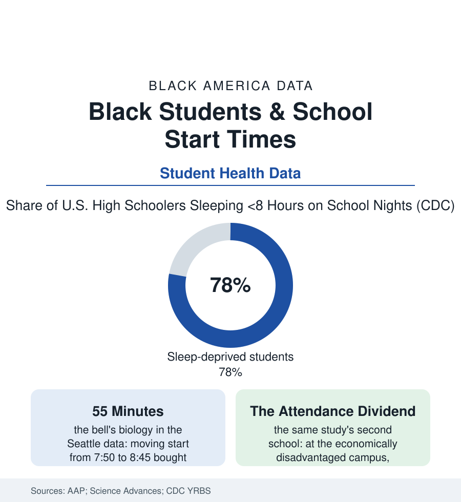

Black Education
The First Bell: School Start Times and the Sleep Data
Biology says teenagers wake late; the bell schedule says 7:30. The districts that moved the bell produced data — and the gains pooled exactly where this atlas would look. The first bell file.

The average American high school starts before 8:30 in the federal data, against the pediatric academy's standing recommendation — grounded in the adolescent brain's own clock — that it start at 8:30 or later. The mismatch is measured in the CDC's surveys as a sleep-deprivation epidemic among teenagers, and its costs and cures both sort by the demographics of this atlas. This article reads the first bell file.
The Biology and the Bus Schedule
The science underneath is unusually settled for an education topic: puberty shifts the circadian system later (the melatonin release that cues sleep arriving hours after it does in childhood and adulthood alike), so that the teenager ordered to sleep at ten and rise at six is being asked to do the physiological equivalent of an adult sleeping at eight and rising at four — the sleep-medicine consensus stated in the academy's policy and the CDC's own materials. The surveys count the result: roughly three-quarters of high schoolers sleeping less than eight hours on school nights, Black students' school-night sleep among the shortest in the YRBS breakdowns — the sleep file's household rows (the shared rooms, the parent's shift schedule, the neighborhood's noise and light) compounding the bell's theft. Why the bells stay early is a logistics file, not a science file: the bus tiers (one fleet serving three school levels in sequence, the high school first), the athletics schedules, the parents' work start — the transportation file's constraints, each genuine, each named in every district's deliberations, and each an adult convenience weighed, in the end, against a child's brain on a scale the districts set themselves. The districts that moved anyway — and the natural experiments they created — are the file's evidence section.
What the Moved Bells Bought
The safety data add the file's most concrete entry: the teen-driver crash studies of the districts that delayed (the morning crash rates for sixteen-to-eighteen-year-olds falling measurably in the before-and-after county data — the drowsy commute as a measurable public hazard the bell schedule had been scheduling), joined to the meals file's quieter row (the early bell's breakfast casualty — the school breakfast program's participation rising in the later-start districts' data, the first meal of the nutrition file no longer competing with the last hour of sleep). And the mental-health rows of the YRBS — the sleep items tracking with the sadness and risk items across every demographic cut the survey publishes — hang over the whole file as the stakes the schedule debate is actually about, beneath the bus contracts and the light bills.
Seattle's is the study the literature cites because it measured everything: when the district pushed high-school start from 7:50 to 8:45, researchers tracked sleep with wrist monitors and found the students sleeping a median thirty-four minutes more a night (the delay passing almost entirely into sleep, not into later bedtimes — the study's decisive refutation of the folk objection), grades rising in the tracked courses, and — in the finding this file exists for — the attendance and tardiness gains concentrated at the district's economically disadvantaged high school, where the improvement ran several times the flagship campus's: the late bell functioning as an equity intervention precisely because the sleep-deprived, the long-commute, and the morning-shift households of the other files are disproportionately the same students, for whom the 7:50 bell was never merely early but exclusionary — the first-period absence in the absenteeism file being, in part, a scheduling decision the district had made about whose mornings were feasible. The other districts' data fill the cost side honestly (the bus-contract repricing, the sports leagues' light bills, the elementary swap — the young children whose biology runs early taking the early tier the teenagers vacated, the rare policy where the physiology of both groups is served by the same trade). The state-level moves of the recent years (California's and Florida's start-time statutes, the first in the nation) have turned the question from whether to how fast — the implementation studies now tracking the same variables Seattle measured, in districts whose demographics will write the next entries in this file.
Reading the Start-Time Data
The first bell is the education system's daily opening argument about whose time counts. The sleep data ruled on it years ago; the schedules are amending at the speed of bus contracts. For the Black teenager on the early bus in the dark — the transportation file's longest morning — the amendment cannot arrive early, which is more than can be said for her school day.
More in Black Education
Black Educational Attainment: High School Parity, the College Gap
About 89 percent of Black adults hold a high school diploma and one in four holds a bachelor's degree or higher — the attainment ladder, the college completion gap, and the generational trend.
Historically Black Colleges and Universities: Enrollment and Degrees
More than 100 HBCUs enroll roughly 290,000 students and award about one in six Black bachelor's degrees — an outsized share from a small sector. The federal education data.
Black College Enrollment: 2.4 Million Students
About 2.4 million Black students are enrolled in American colleges — nearly two-thirds of them women. The NCES enrollment data by sector, level, and trend.
Source: American Academy of Pediatrics; Seattle school start-time study (Science Advances); CDC Youth Risk Behavior Survey; National Center for Education Statistics start-time data.